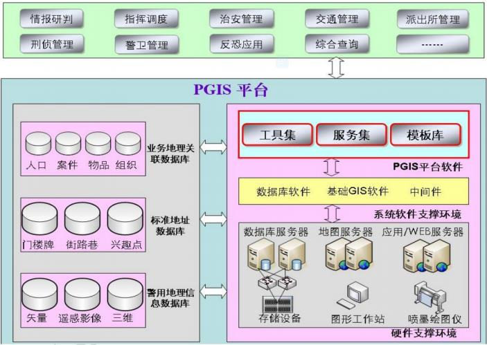
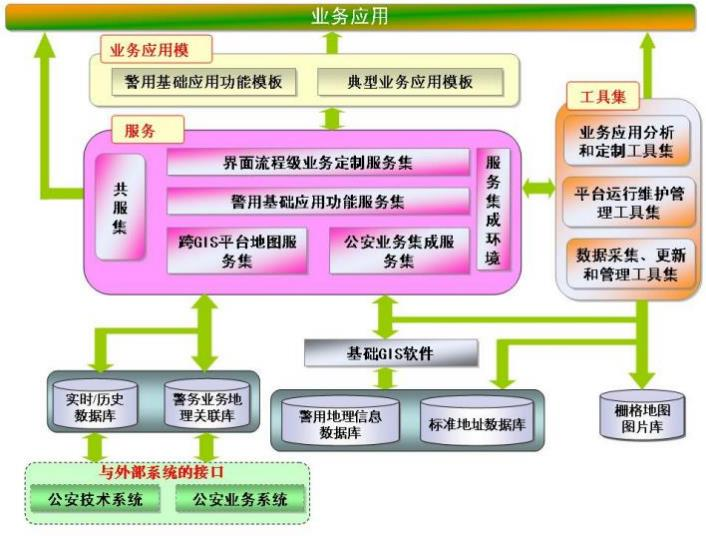
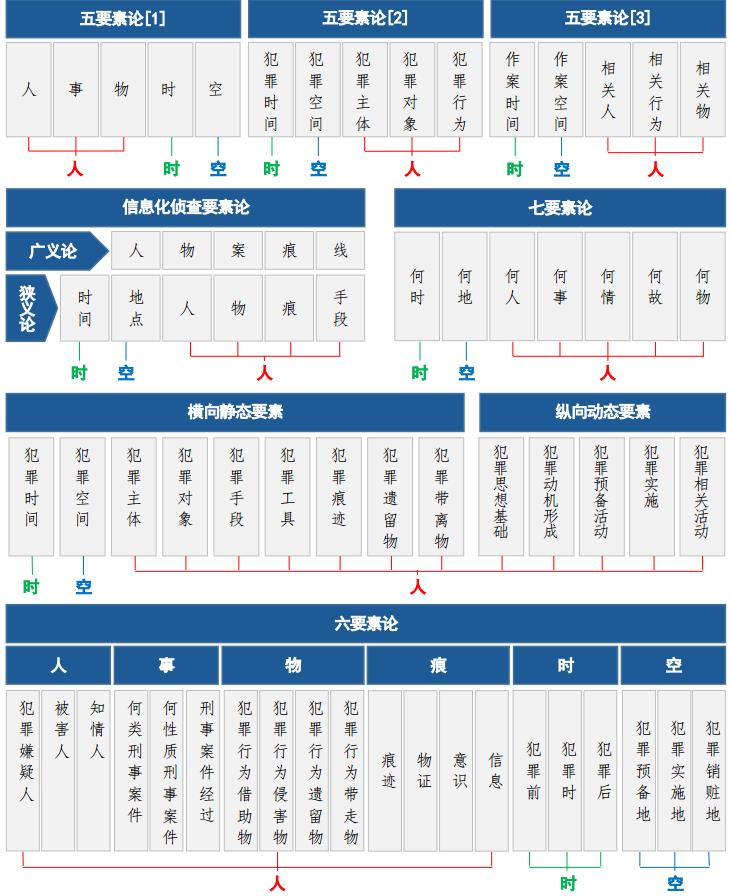

 
一、时空轨迹中隐含的周期性活动规律
>- 我们赖以生存的宇宙普遍存在周期性
>- 将定性描述转变为定量分析[1] 针对犯罪嫌疑人
纳入侦查视线的犯罪嫌疑人：针对某起案件，对纳入侦查视线的犯罪嫌疑人，通过分析其历史时空轨迹，掌握其周期性活动规律，通过与其在案件发生前、案件发生时、案件发生后这段特定时间段的时空轨迹进行对比分析，以判明在此特定时间段其是否偏离周期性活动规律。对在案件发生前、案件发生时、案件发生后这段特定时间段时空轨迹偏离其周期性活动规律的犯罪嫌疑人应重点关注。
抓捕在逃的犯罪嫌疑人：根据其周期性活动规律预测其潜逃方向或落脚点。
配合对已抓捕归案的犯罪嫌疑人的审讯：对已抓捕归案的犯罪嫌疑人，通过分析其周期性活动规律，圈定案件发生前后其时空轨迹是否存在异常点，有利于进一步打开审讯突破口。
[2] 针对重点人
重点人包括重点人口、监管对象和关注对象等。通过分析其周期性活动规律确定其活动范围，然后由计算机动态监控其活动范围，对超出范围的活动马上预警，由民警视情进行跟踪走访。
[3] 针对案件受害人
对案件受害人特别是死亡案件的受害人，由于已无法从受害人那里得到案发时的情况，通过分析其周期性活动规律，确定案发时受害人的时空轨迹是否在其周期性活动范围之内，若不是，则进一步分析是何种因素导致受害人偏离其周期性活动规律，并由此推断受害人和犯罪嫌疑人之间的关系。
概括来讲，对于公安机关，分析特定人群在较长时间段的历史时空轨迹，挖掘其中隐含的周期性活动规律具有以下意义：第一，将原始数据转化为人类语言并进行精确地定量描述，有利于对特定人群的行为进行全面地了解；第二，对于与某起案件相关的人员，有利于对其在案发前、案发时、案发后这段特殊时间段的行为进行深入地洞察；第三，有利于预测特定人群的未来活动趋势，特别是长期活动趋势；第四，特定人群的现行行为若偏离其周期性活动规律，及时发出预警信号。
二、时空轨迹中隐含的人际关系
对时空轨迹中隐含的人际关系进行分析研究时，是以人的心理特征和行为特征为中心，结合时空轨迹发现人与人之间的关系，即人际关系。由于时间和空间是物质存在和运动不可或缺的形式，所以人的各种行为的实施也是时空统一的运动形式。
在所有犯罪行为当中，刑事案件具有典型性。中国人民公安大学学者马忠红指出，刑事案件是由诸多要素构成的一个系统，提出了刑事案件“六要素论”，即由“人、事、物、时、空、痕”六大要素构成。早期一些教材和文章也曾提出刑事案件的 “五要素论”、“七要素论”、“纵向动态和横向静态要素论”、“信息化侦查要素论”等。

二、时空轨迹中隐含的人际关系
人具有主观能动性，犯罪行为的发生往往是人与人之间产生某种关系才得以实施。时空轨迹可以反映以下三种人际关系：
>- 朋友/同事关系
>- 蹲守/跟随关系
>- 吸引/躲避/中立关系
首先对人际关系已知的时空轨迹数据进行机器学习，得到分类器，然后对人际关系未知的时空轨迹数据进行分类。
>- 朋友/同事关系：不以在一起相处的时间长短来确定关系的亲密程度。比如，晚上一起吃饭，周末一起
活动的是朋友关系，而在工作日期间，白天在一起的可能仅仅是同事关系。
>- 蹲守/跟随关系：在尾随作案、跟踪监视等场景中可能会出现这种关系。比如对于蹲守作案类型，犯罪
嫌疑人首先长时间蹲守在某一位置观察，发现犯罪目标后进行尾随，并可能采取不同的路线迂回尾随。
>- 吸引/躲避/中立关系：物以类聚，人以群分。针对犯罪或治安问题，比如赌博、吸毒活动，这类活动
通常会有组织者，其他人根据组织者的召集会陆续聚集到一起。而对于一些违法犯罪活动，则会出现小偷
躲避警察，毒贩设法躲避各种设卡等。